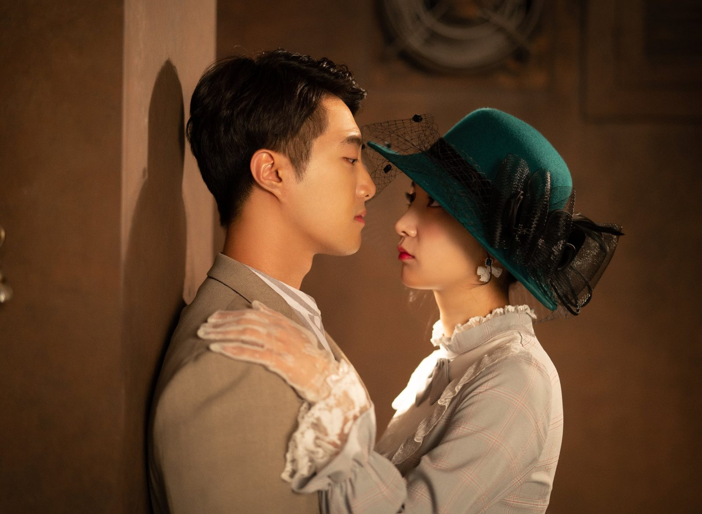
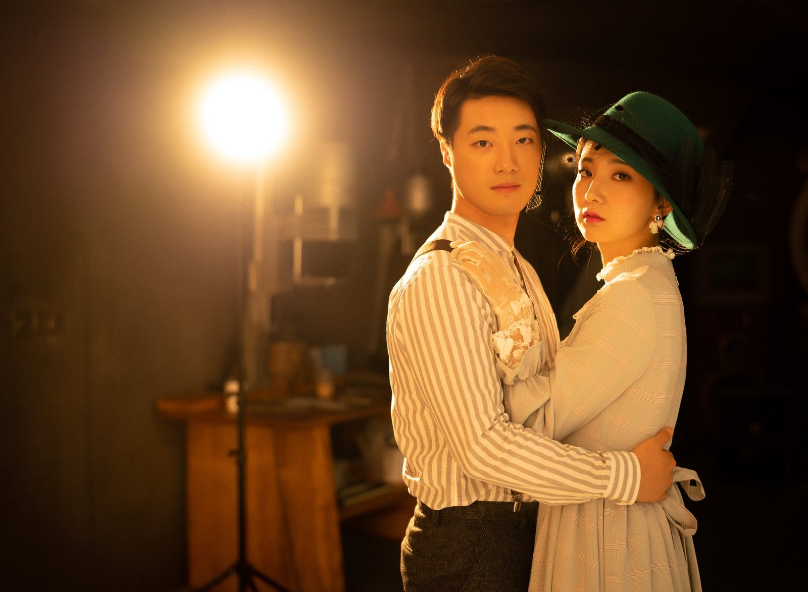
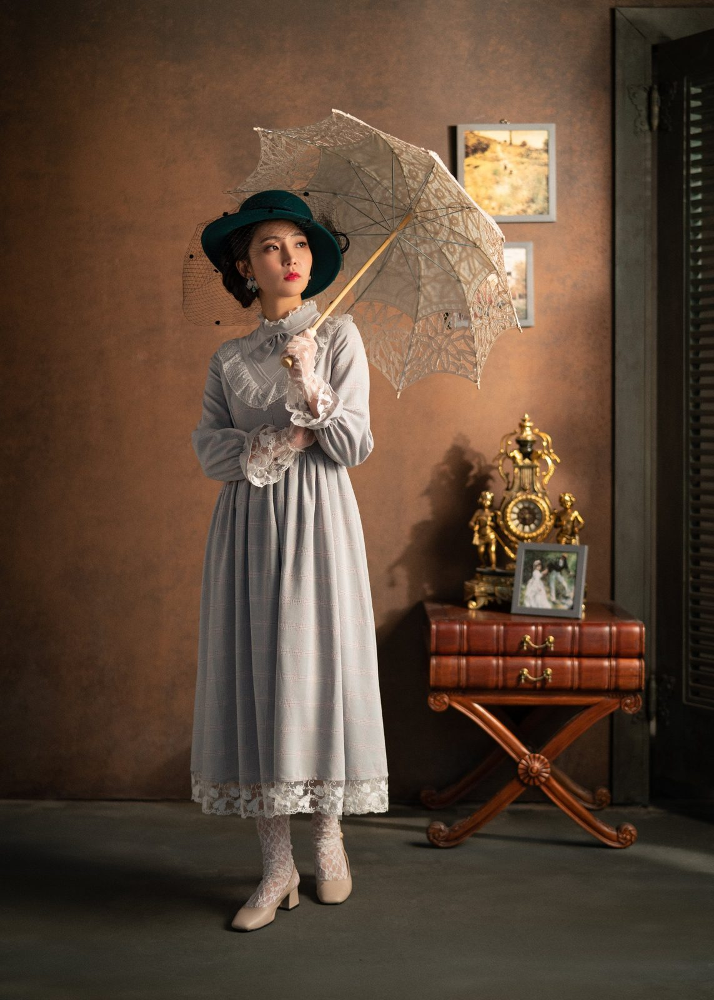
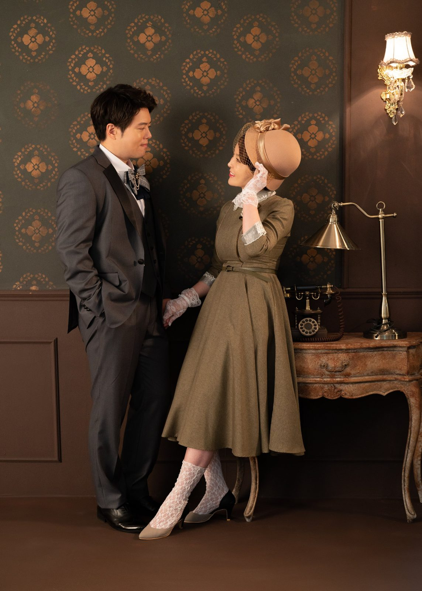
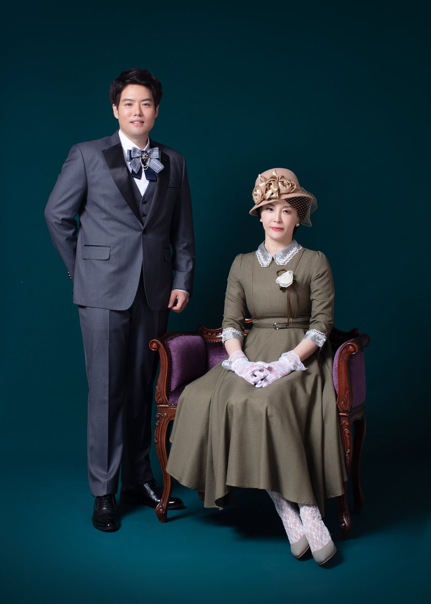
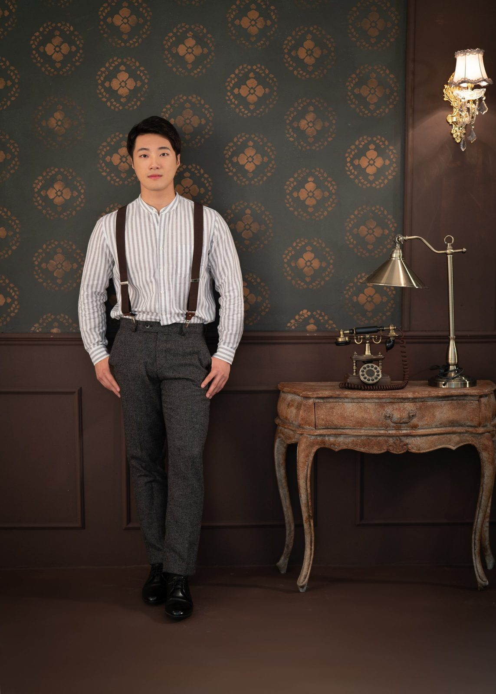
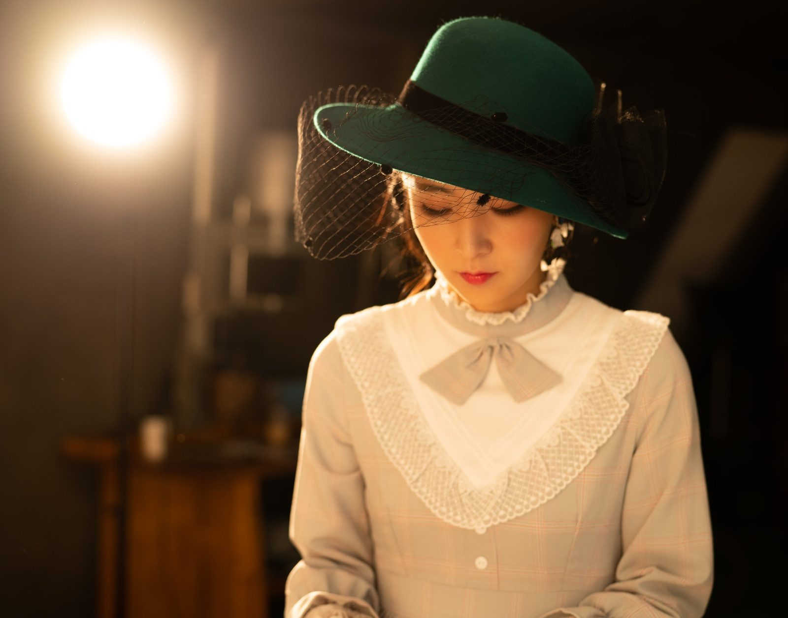
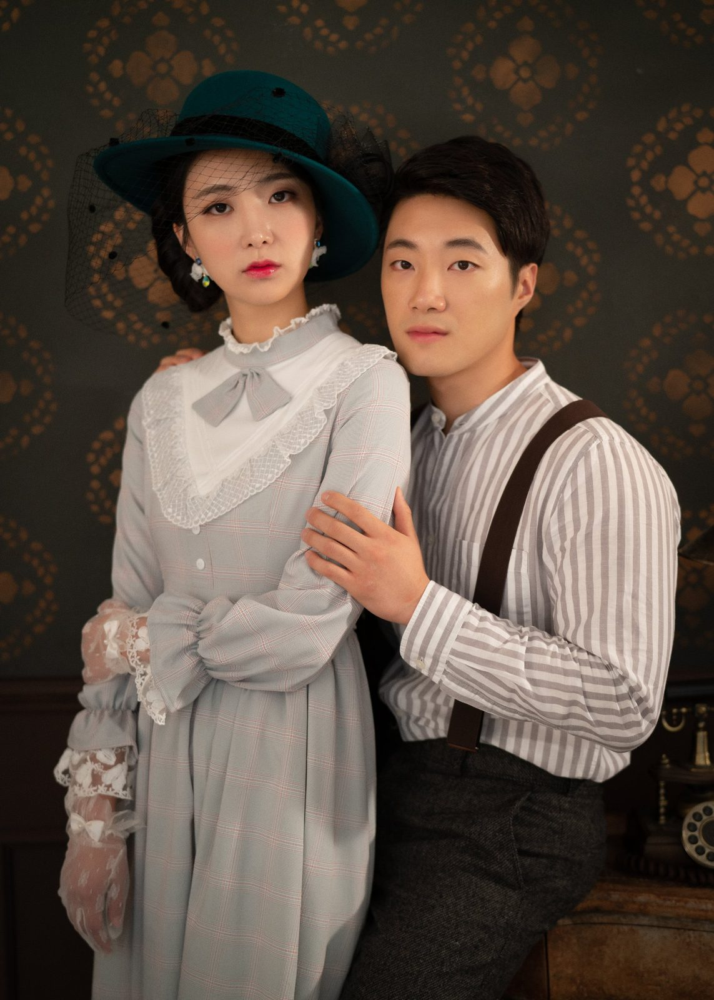
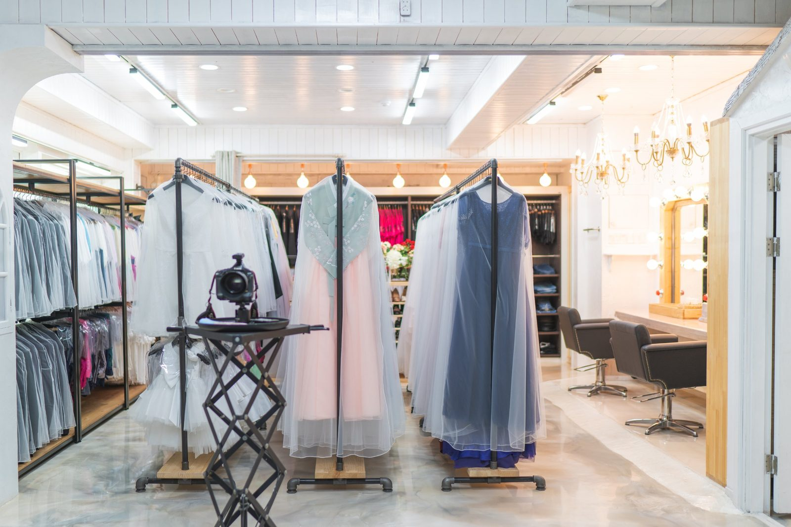

창원 복고 가족사진 — 그 시절 옷을 다시 입으면 사진이 이야기가 됩니다
2026-10-19 발행
창원 복고 가족사진은 지금은 입지 않는 옛 시절의 옷을 온 가족이 다시 입고 찍는 촬영입니다. 개화기풍의 긴 원피스와 클래식한 정장, 모자와 양산, 레이스 장갑 같은 소품이 한 화면에 모이면 사진이 곧 한 편의 이야기가 됩니다. 옷 한 벌이 바뀌면 사람의 걸음걸이까지 바뀝니다.

사랑이야기 스튜디오 창원점은 경남 창원시 성산구 원이대로 652, 상남동 롯데빌딩 2층에 있습니다. 복고 촬영은 컨셉을 정하는 일에서 시작합니다. 같은 옷을 입어도 소품을 어떻게 나누느냐에 따라 분위기가 완전히 달라집니다. 어머니는 양산을, 아버지는 중절모를, 아이는 작은 모자 하나만 써도 사진이 살아납니다.

복고 가족사진은 왜 인기가 있을까요? 평소에 입지 않는 옷을 입으면 사람이 조금 달라 보이기 때문입니다. 어색함이 오히려 웃음이 되고, 그 웃음이 사진에 남습니다. 부모님 세대는 그런 옷을 한 번쯤 입어 본 기억이 있어서 표정이 훨씬 자연스럽습니다.

촬영은 실내 스튜디오에서 합니다. 앤티크한 벽지와 조명을 배경으로 앉아서 찍는 사진이 많고, 서서 찍는 컷도 함께 담습니다. 서로 마주 보고 앉는 자세가 가장 잘 어울립니다. 옷의 결이 살아나고 표정이 편해지기 때문입니다. 의자 하나만 바꿔도 배경의 시대가 달라집니다.

소품은 나눠 드는 것이 좋습니다. 한 사람이 다 들고 있으면 사진이 무거워집니다. 어머니는 양산, 아버지는 모자, 아이는 작은 부채 하나씩. 손에 무엇이든 하나씩 들고 있으면 어색한 손이 자연스러워집니다. 촬영에서 가장 어색한 순간은 손이 어디로 갈지 모르는 순간입니다.

옷과 소품은 의상실에서 준비합니다. 한복과 원피스, 정장, 모자와 양산, 장갑까지 갖춰져 있습니다. 촬영 전 상담에서 어떤 분위기를 원하시는지 말씀해 주시면 그에 맞춰 소품을 골라 두겠습니다. 그날 입으실 옷은 미리 정해 두시면 촬영 당일이 훨씬 편합니다.
오실 때 따로 준비하실 것은 없습니다. 옷과 소품은 저희가 준비하고, 상담 때 어떤 분위기를 원하시는지 정해 두면 촬영이 훨씬 빨라집니다. 신발은 사진에 잘 나오지 않지만, 서 계실 때 편한 것이 좋습니다.
복고 촬영은 대개 한 시간 남짓 걸립니다. 옷을 두 번 갈아입으면 조금 더 걸립니다. 아이가 있으면 중간에 쉬는 시간을 넣습니다.
빛은 오전이 좋습니다. 창으로 들어오는 빛이 부드러워서 옷의 결이 살아납니다. 오후 늦은 시간에는 그림자가 길게 지는데, 그것도 복고 사진에서는 분위기가 됩니다.
사이즈가 걱정되시면 미리 말씀해 주세요. 옷을 여러 벌 준비해 두고 그 자리에서 맞는 것을 고르시면 됩니다.
사진을 고를 때는 표정을 먼저 보시길 권합니다. 옷은 다 예쁘게 나오지만, 표정은 그날의 기분을 담고 있습니다. 웃음이 가장 자연스러운 컷을 큰 사진으로 남기시면 좋습니다.
복고 사진은 한 장으로도 이야기가 됩니다. 그래서 저는 가족마다 다른 소품을 하나씩 정해 두는 것을 좋아합니다. 그 소품이 사진의 제목이 됩니다.
촬영이 끝나면 옛날 이야기가 한참 이어지기도 합니다. 그 시간까지가 촬영입니다. 사진은 그 이야기의 마지막 장이 아니라 첫 장이니까요.

복고 사진은 어르신과 함께 찍을 때 가장 좋습니다. 어르신은 그런 옷을 입어 본 세대라 표정이 다릅니다. 옛날 이야기가 자연스럽게 나오고, 그 이야기를 들으며 찍은 사진은 가족에게 오래 남습니다. 촬영장이 잠깐 이야기방이 되는 시간을 저는 좋아합니다.

옷은 한 가지만 정하지 않으셔도 됩니다. 옛 시절 분위기를 바꿔 두 번 찍는 분도 많습니다. 옷을 갈아입는 사이에 어색함이 풀려서, 두 번째 사진이 더 좋은 경우도 흔합니다. 같은 날 이어서 찍으면 시간도 오래 걸리지 않습니다.

가장 좋은 순간은 옷을 다 입고 거울 앞에 모였을 때입니다. 서로를 보고 웃는 그 몇 초를 저는 먼저 담습니다. 그다음에 자리를 잡고 차분한 사진을 찍습니다. 서른일곱 해 동안 가장 자주 쓴 순서입니다.

사진을 어색해하시는 분께는 늘 같은 말씀을 드립니다. "옛날 사람이 된 것처럼 한번 걸어보세요." 그러면 대개 몇 걸음 안에 표정이 풀립니다. 걸음걸이가 바뀌면 어깨가 펴지고, 어깨가 펴지면 사진이 달라집니다.

복고 촬영은 배경도 함께 준비합니다. 벽지와 조명, 의자와 소품이 한 세트로 어울려야 사진이 어색해지지 않습니다. 그래서 같은 공간이라도 컨셉마다 자리를 조금씩 바꿉니다. 사진마다 다른 시대로 보이게 하는 것이 저희가 하는 일입니다.
처음 오시는 분들이 가장 긴장하는 컨셉도 복고입니다. 하지만 옷을 입고 거울 앞에 서는 순간, 대부분 웃음이 먼저 나옵니다. 저는 그 웃음부터 찍습니다. 어색한 표정을 지우는 것보다, 어색한 순간을 웃음으로 바꾸는 편이 사진이 훨씬 좋습니다.
복고 촬영을 처음 계획하시면 사진을 몇 장 보시고 오시는 것이 좋습니다. 마음에 드는 분위기를 말로 설명하기 어려울 때, 사진 한 장이 훨씬 정확합니다. 보시던 사진을 가져오셔도 됩니다.
가족마다 어울리는 시대가 다릅니다. 어떤 가족은 개화기풍이 잘 맞고, 어떤 가족은 조금 더 가까운 시절의 옷이 잘 맞습니다. 상담에서 두 분위기를 다 보여 드리고 함께 정합니다.
복고 사진은 배경과 옷이 어긋나면 금방 티가 납니다. 그래서 저는 옷을 먼저 정하고 배경을 그 옷에 맞춥니다. 순서가 반대가 되면 아무리 좋은 옷도 사진에서 어색해집니다.
사진이 끝나면 김스카페에서 커피 한 잔 드시며 그날 사진을 함께 보실 수 있습니다. 원하시면 원목 액자까지 골라 가실 수 있습니다. 옛 시절 사진은 액자에 담아 걸었을 때 가장 잘 어울립니다.
복고 촬영 뒤에는 사진을 보면서 옛날 이야기를 많이 하십니다. 그 이야기를 들으며 어떤 사진을 크게 남길지 정하면, 대개 답이 금방 나옵니다.
처음 계획하실 때 가장 중요한 것은 날짜입니다. 옷과 배경을 준비하는 데 시간이 걸리기 때문에, 한두 주 전에는 예약하시는 편이 좋습니다.
복고 사진은 한 번 찍으면 오래 두고 보게 됩니다. 그래서 저는 유행하는 느낌보다 10년 뒤에도 어색하지 않은 느낌을 고릅니다. 옷과 배경이 단정하면 사진이 오래갑니다. 화려함보다 균형이 오래 남습니다.
옛 시절의 옷을 다시 입는 일은, 그 시절을 한 번 더 살아보는 일입니다. 그날 가족이 나눈 이야기는 사진보다 오래 남지만, 사진은 그 이야기를 다시 꺼내게 해 줍니다.
자주 묻는 질문
Q. 복고 사진은 어떤 옷을 입나요?
A. 개화기풍 원피스와 클래식한 정장을 기본으로 하고, 모자·양산·장갑 같은 소품을 함께 씁니다. 상담 때 원하시는 분위기를 말씀해 주시면 그에 맞춰 준비하겠습니다.
Q. 아이도 함께 찍을 수 있나요?
A. 네. 아이가 함께하면 사진이 한층 밝아집니다. 아동용 소품은 상담 때 함께 확인해 드립니다.
Q. 부모님만 따로 찍을 수도 있나요?
A. 네. 가족 사진을 먼저 찍고, 부부 두 분만 서는 컷과 단독 컷을 이어서 담습니다.

오시는 곳
사랑이야기창원점
- 주소 경남 창원시 성산구 원이대로 652, 상남동 롯데빌딩 2층
- 전화 055-287-8022
- 영업시간 오전 10:00 ~ 오후 7:00
- 예약 전화 상담 · 카카오톡 채널
- 주차 건물 지하 주차장
김작가사진이야기 의령
- 주소 경남 의령군 궁류면 청정로 1188
- 전화 055-574-3706
- 영업시간 오전 10:00 ~ 오후 7:00
- 예약 전화 상담 · 카카오톡 채널
- 주차 전용 주차장
이 글에 한마디
댓글창을 준비하고 있습니다. 그동안 궁금한 점은 카카오채널로 남겨 주시면 바로 답변드립니다.
카카오채널로 한마디 남기기